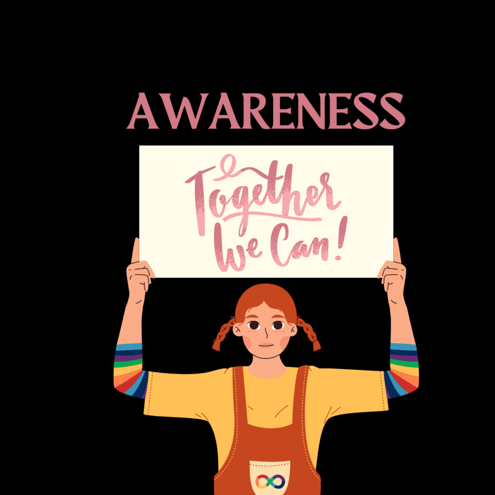

Prakalp Chaitanyam is a project introduced by We For A Cause Foundation. "Chaitanyam" is a Sanskrit word meaning awareness.
We are working for animal welfare for about a year now.We will arrange campaigns for social issues prevailing in society and educate society about women health and hygiene, sex education, child rights and education, environmental awareness, promote veganism, encourage sports activities.
We will be focusing 3 months completely on one community with upto 10-12 volunteers and further at the end of the tenure we will be focusing on mode of employment for the people in the community. This project will require support from government officials and we will also need a strong team.
We need volunteers who are ready to join on every sunday for a noble cause.
Join as Volunteer